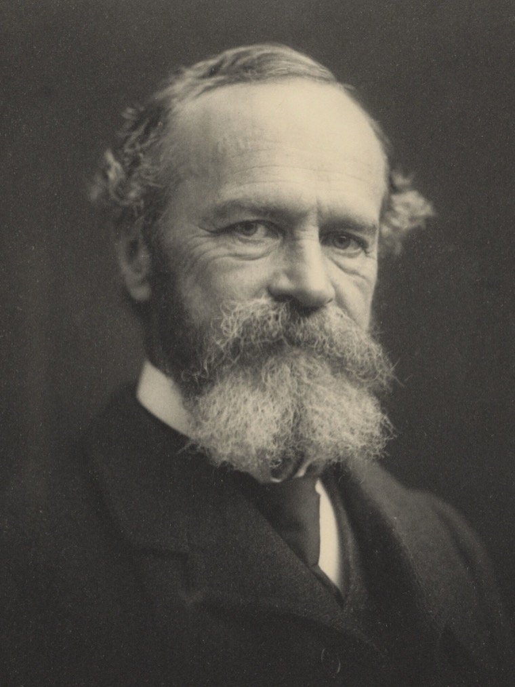

A Harvard scientist set out to study religion the way you study any natural force, by collecting what people actually felt in the grip of it, and judging it all by one test: what it did to the life that had it.
A distillation /1902, distilled/16 sources/ 20 min read
In 1901 a Harvard professor stood up in Edinburgh to give a year of public lectures on religion, and told the room he would be handling it like a naturalist handling beetles. He was not going to argue about whether God exists. He was going to collect specimens, one person's first-hand experience at a time, the sudden conversions and the slow ones, the saints and the cranks and the people who heard a voice, and lay them out the way you would sort a drawer of insects.
The professor was William James, a trained physician who had just about invented the academic study of psychology in America. The lectures became a book, The Varieties of Religious Experience, in 1902. It is still in print, still assigned, and still about the strangest thing a scientist can decide to take seriously: what actually happens inside a person when religion gets hold of them.
James meant the specimen-collecting so literally that one of the specimens was himself. Deep in the book sits a case he credits to an anonymous "French correspondent," a young man jumped one evening by a horror of his own existence, who pictures an idiot patient he had once seen in an asylum and thinks, that shape am I, potentially. It is the most frightening passage in the book. Only after James died did his family let on what he had hidden: the terrified Frenchman was James, writing up his own breakdown as a case study. He had been to the bottom of the thing he spent a career studying.

William James, 1903. Notman Studios. Public domain.
What follows is that book, distilled. The single test James judges everything by, the two kinds of religious temperament he sorts people into, what he decided conversion actually is, the four fingerprints of a mystical state, and the unlikely afterlife the book had thirty years later, in a drunk's room at a New York hospital.
The method
One test, and one test only
James starts by clearing the table. He is not interested, he says, in religion as an institution, the churches, the systematic theology, the committees. Those come second-hand, built later on top of something. He wants the original thing, the part that always happened first to one person alone.
Religion ... shall mean for us the feelings, acts, and experiences of individual men in their solitude, so far as they apprehend themselves to stand in relation to whatever they may consider the divine.The Varieties of Religious Experience, Lecture II
So he is after the feeling, not the building. Not the creed a billion people recite on schedule, but the night one of them felt the floor of the universe shift. James thought that was the live wire, and that the doctrine and the ritual and the priests were wiring laid down afterward to carry the current. "The founders of every church," he writes, "owed their power originally to the fact of their direct personal communion with the divine." The church is the cooled lava. He wanted the eruption.
Then the move the whole book runs on. How do you judge an experience like that, when you cannot check whether the God on the other end is really there? James's answer is the most quoted line he ever wrote, and he lifts it from the Sermon on the Mount.
By their fruits ye shall know them, not by their roots.The Varieties of Religious Experience, Lecture I
Judge the experience by what it grows, not by where it came from. That sounds mild until you watch what he does with it. A doctor of James's day could wave away any conversion as a symptom: the visionary was an epileptic, the saint a hysteric, the mystic's bliss a misfiring nerve. James, a physician himself, cheerfully grants every bit of it. The cause might well be a sick brain. So what. A state of mind is not discredited by an ugly origin, any more than a good idea is ruined by the fact that it showed up while you had a fever. You judge the tree by the apples. You judge the saint by the saintliness and the convert by the changed life, and you are, he tells the room, "to judge the religious life by its results exclusively."
The diagnosis
The healthy-minded and the sick soul
With the table cleared, James starts sorting, and his specimens fall into two piles. He borrows the labels from a Victorian writer named Francis Newman: the once-born and the twice-born.
The once-born are the people religion comes easy to. James calls their temperament healthy-mindedness, "the tendency which looks on all things and sees that they are good." They are built sunny. They meet God as the warmth behind a basically good world, they do not brood, and, as James notes a little drily, they "hardly think of themselves at all." He half envies them. The self-help of his era, the "mind-cure" movement with its affirmations and its insistence that you are already well, was healthy-mindedness sold by the bottle, and James thought it genuinely worked for the people it fit. Some people really are once-born, and good luck to them.
Then there is the other pile. The twice-born, the sick souls, are the ones for whom the cheerful version is a thin coat of paint they can see straight through. They are the people who notice that everything they love is running on a clock.
A little irritable weakness and descent of the pain-threshold will bring the worm at the core of all our usual springs of delight into full view, and turn us into melancholy metaphysicians.The Varieties of Religious Experience, Lecture VI
These are the people who cannot un-see death, who feel the floor is rotten under the nicely set table. And here James does the thing nobody caught for eighty years. He hands the room the worst case of it he has, a man ambushed in a dressing-room by sheer panic fear, and presents it as a translation from a nervous Frenchman.
There arose in my mind the image of an epileptic patient whom I had seen in the asylum ... That shape am I, I felt, potentially. Nothing that I possess can defend me against that fate, if the hour for it should strike for me as it struck for him ... After this the universe was changed for me altogether.The Varieties of Religious Experience, Lecture VII (James, on himself)
The Frenchman was James. He had had that collapse in his twenties, written it into his own scientific study behind a disguise, and let it sit there unrecognized for decades. Which tells you how to read the whole book. James does not rank the once-born over the twice-born. If anything he leans the other way. The sick soul, he thought, simply sees more. The happy man is happy partly because he is not looking. The sick soul is looking, and what he sees is real, and that is exactly why, when religion does reach him, it has so much more to do and goes so much deeper. You have to lose the world before you can be surprised by getting it back. The name for that turn is conversion, and it is the next stop.
The turn
Conversion, or the divided self made whole
Conversion is the most loaded word in the book, and James does something useful with it. He drains out the church and keeps the mechanism. Stripped down, conversion is just what happens when a person who has been at war with himself stops being at war.
To be converted ... is the process, gradual or sudden, by which a self hitherto divided, and consciously wrong inferior and unhappy, becomes unified and consciously right superior and happy.The Varieties of Religious Experience, Lecture IX
Read that sentence again and notice there is no God required in it. A divided self becomes a whole one. The man who wanted two things he could not have at once, the drinker who hates the drink, the believer who cannot believe, finds the pieces have clicked into one piece, finally pointed the same way. James collected case after case of it and found the change real and often permanent, whatever you decide did the clicking.
Then the distinction that ends up mattering most. Conversions come at two speeds. Some are the lightning bolt, the Damascus road, the single night that splits a life into before and after. James calls that the self-surrender type: the person quits struggling and something seems to finish the job for them. But most conversions, he insists, are the slow kind.
In the volitional type the regenerative change is usually gradual, and consists in the building up, piece by piece, of a new set of moral and spiritual habits.The Varieties of Religious Experience, Lecture IX
Built, not struck. Laid down piece by piece, the way you learn an instrument, until one day you notice you have become a different person and cannot say which day it happened. And James is careful that this slow kind is not the poor relation of the dramatic one. "The difference between the two types," he writes, "is after all not radical." Hold onto that line. It is going to matter a great deal to a man named Bill, thirty years after James is dead, who is about to have the flashy kind and panic that nobody else can be saved without it.
The core
The four marks of a mystical state
At the center of the book is the experience James half suspected was the hot core under all the rest: the mystical state, the moment a person feels the curtain pull back. The trouble is that "mystical" has been worn smooth, slapped on anything vague or spooky. So James, always the taxonomist, gives the word four edges. An experience has to show these four marks, he says, before he will file it as mystical.
tap a mark, or use the arrow keys
Mark one
Ineffability
You cannot say what happened. The person comes back certain that no words will carry it, that you would have had to be inside it to know. James reaches for music and for love: you can describe a symphony all day to someone who has never heard one and hand them nothing, and a person who has never been in love cannot be told what it is like. The state has to be lived to be known. That is exactly why it travels so badly, and why it gets laughed off so easily by everyone who was not there.
It defies expression ... no adequate report of its contents can be given in words.
The Varieties of Religious Experience, Lecture XVI.
Mark two
It feels like finding something out
This is the load-bearing one. The state does not feel like a mood. It feels like knowledge, like a window thrown open onto a truth the everyday mind cannot reach. People come out of it convinced, not merely moved, and the conviction holds for years, carrying what James calls a curious sense of authority.
James the scientist will not tell you whether what they saw is real. He just insists that the sense of having seen is the heart of the thing, and that any honest account of human nature has to find room for it instead of explaining it away.
They are states of insight into depths of truth unplumbed by the discursive intellect.
The Varieties of Religious Experience, Lecture XVI.
Mark three
It never lasts
Half an hour, an hour at the outside, and it fades back into ordinary daylight. But it does not fade to nothing. Once you have been there you know it if it ever comes again, and between visits it keeps working on you quietly, deepening.
The brevity is part of why it feels like grace and not like property. You do not get to keep it. You get to be visited by it, and then you go back to doing the dishes.
Mystical states cannot be sustained for long ... half an hour, or at most an hour or two, seems to be the limit beyond which they fade into the light of common day.
The Varieties of Religious Experience, Lecture XVI.
Mark four
It is done to you
You can set the table, a chant, a fast, a fixed gaze, a held breath, but you cannot make the guest arrive, and when it arrives it feels done to you, not by you. The will goes quiet. The person feels held, sometimes gripped, by something larger that has taken over the controls.
This is the mark that connects the saint's rapture to a hundred stranger states where the self steps aside, and it is the one that unsettled James's scientific colleagues most, because it is the one where the person stops being the author of their own mind.
The mystic feels as if his own will were in abeyance, and indeed sometimes as if he were grasped and held by a superior power.
The Varieties of Religious Experience, Lecture XVII.
Put the four together and you have James's working definition of the thing at the bottom of the well: a brief, unbidden state, impossible to put into words, that arrives feeling less like a mood than like news, and leaves the person changed. He lines up the cases, Christian saints, Sufi poets, Hindu yogis, a few startled ordinary people, and, being James, some nitrous oxide he inhaled himself in the name of research, and notices they keep describing the same country. Different maps, he thought. Maybe the same territory.
The verdict
What it all comes down to
After twenty lectures of specimens, James does what a scientist does at the end. He asks what they have in common. Under all the warring creeds, he says, the religions agree on a two-part shape, and it is almost embarrassingly simple.
The uneasiness, reduced to its simplest terms, is a sense that there is something wrong about us as we naturally stand. The solution is a sense that we are saved from the wrongness by making proper connection with the higher powers.The Varieties of Religious Experience, Lecture XX (Conclusions)
Something is wrong with us. We get saved from it by connecting to something higher. That is the whole shared skeleton, the one bone the Buddhist and the Baptist have in common. Notice that James will not say what the higher power is. He thought there was a real "more" out there that people make contact with in these states, but he flatly refused to dress it up as any one church's God. He called his own position piecemeal supernaturalism: yes to something more, no to the full theological package any single religion was selling. A scientist's hedge, and an honest one.
Now the part a careful reader should lean on, because James would have.
The objection
This is one man's tour through a stacked deck. James went looking in the diaries of the religious geniuses, the saints and visionaries and florid cases, because that is where the experience burns brightest. But a thing studied only at its extremes will always look more uniform and more profound than the everyday article. And his beloved "by their fruits" test cannot do the one job you most want done: it cannot tell you which religion is true. Two converts can both bear good fruit while believing flatly opposite things about the universe.
The honest version
James knew all of it and would not have flinched. He says outright that he is sampling the geniuses on purpose, the way you study any force at its strongest. And the fruits test was never built to crown a winner. It was built to win religious experience a seat at the grown-ups' table, to argue that these states are worth the attention of science whether or not the theology checks out. On that narrower claim he basically won. The modern psychology of religion starts in this book.
The afterlife
The book behind Alcoholics Anonymous
Here is the strangest fruit the book ever bore. The man who founded Alcoholics Anonymous credited William James, dead since 1910, as one of its founders.
In December 1934, a failing stockbroker named Bill Wilson checked into Towns Hospital in Manhattan to dry out, again. Out of options and badly frightened, he had what he later described as a sudden blaze of white light and presence, and came up from it certain he was finished with drinking. He was also skeptic enough to be terrified he had simply cracked. Someone handed him a copy of The Varieties of Religious Experience, probably his old friend Ebby Thacher, though Wilson could never quite remember, and he read it in the hospital bed.
What the book gave him was permission. Here was a Harvard scientist, no revival preacher, saying that experiences exactly like the one Wilson had just had were real, were common, genuinely remade the people they happened to, and, this was the load-bearing part, came in many forms, including slow and undramatic ones, and tended to land on people only after they had hit total defeat. Wilson had hit total defeat. He decided his white light was not madness but data, the kind James had spent a book cataloging. He put it plainly in his own memoir.
By nightfall, this Harvard professor, long in his grave, had, without anyone knowing it, become a founder of Alcoholics Anonymous.Bill Wilson, recalling Towns Hospital, December 1934
That gratitude left a fingerprint on AA's own scripture. When the first members wrote their basic text in 1939, the book everyone calls the Big Book, they ran into a problem Wilson had created. His lightning-bolt night scared newcomers, who figured that if they did not get a white light of their own, they could not get sober. So in 1941 they added an appendix to talk everyone down, and they reached for James to do the talking.
Most of our experiences are what the psychologist William James calls the "educational variety" because they develop slowly over a period of time.Alcoholics Anonymous, Appendix II, "Spiritual Experience" (1941)
That is James's slow conversion, the volitional type built piece by piece, handed to a frightened drunk as a promise that the gradual kind counts every bit as much. William James is the only outside thinker the Big Book names.
This is a distillation of one book, told in my own words; the ideas are James's. Quotes are short, reproduced for study and comment, and checked word for word against the public-domain text of the 1902 first edition. They are cited by Lecture, since the book's pagination differs across the many editions. A few of James's sentences use an em dash or a semicolon where I have put a comma or an ellipsis; the wording itself is unchanged. The site does not use em dashes anywhere.
The full list, 16 sources
William James.The Varieties of Religious Experience: A Study in Human Nature. Longmans, Green & Co., 1902. The source for every quote here, read against the full text on Project Gutenberg (eBook 621).
What the book is. The published form of the Gifford Lectures on natural religion, twenty lectures James delivered at the University of Edinburgh across 1901 and 1902. overview
The definition of religion, and personal vs institutional. "The feelings, acts, and experiences of individual men in their solitude ..." and "the founders of every church owed their power ... to ... direct personal communion with the divine," both Lecture II ("Circumscription of the Topic").
By their fruits, not their roots. James's "empiricist criterion," and "to judge the religious life by its results exclusively," Lecture I ("Religion and Neurology").
Healthy-mindedness and the once-born. "The tendency which looks on all things and sees that they are good," Lecture IV; the "once-born and twice-born" pair is quoted by James from Francis W. Newman, Lectures IV to V ("The Religion of Healthy-Mindedness").
The sick soul. "The worm at the core of all our usual springs of delight," Lecture VI; the once-born vs twice-born "two different conceptions of the universe," Lectures VI to VII ("The Sick Soul").
The "French correspondent" was James. The panic-fear passage ("That shape am I ...," Lecture VII) is James's own experience, lightly disguised; identified by his student and biographer Ralph Barton Perry in The Thought and Character of William James (1935) and long since accepted. background
Conversion, and the two types. "A self hitherto divided ... becomes unified," Lecture IX; the "volitional type" (gradual) vs the "type by self-surrender" (sudden), and "the difference between the two types is after all not radical," Lectures IX to X ("Conversion"). James credits the type labels to Edwin Starbuck.
The four marks of mysticism. Ineffability, noetic quality, and transiency in Lecture XVI; passivity at the start of Lecture XVII ("Mysticism").
The conclusions. The two-part "uniform deliverance" (an uneasiness, and its solution) and the "MORE," Lecture XX; "piecemeal supernaturalism" is James's term from the Postscript.
Who James was. Physician (Harvard M.D., 1869), author of the field-defining The Principles of Psychology (1890), and brother of the novelist Henry James; 1842 to 1910. Stanford Encyclopedia of Philosophy
Bill Wilson reads James. Wilson's last admission to Towns Hospital was December 11, 1934; the spiritual experience came first, and he read Varieties just after, most likely still in the hospital. Ernest Kurtz, Not-God: A History of Alcoholics Anonymous (Hazelden, 1979), notes Wilson "was inclined to think that Ebby" brought the book but could not be sure. Bill Wilson
"A founder of Alcoholics Anonymous." Bill Wilson's account of the Towns Hospital reading, from his autobiographical recollections (Bill W.: My First 40 Years); he repeats the credit to James in Alcoholics Anonymous Comes of Age (1957). Kurtz calls the "founder" billing "manifestly hyperbolic," which is the honest read.
The "educational variety."Alcoholics Anonymous (the "Big Book"), Appendix II, "Spiritual Experience," added to the second printing in 1941. The phrase "educational variety" is AA's own gloss credited to James; it maps onto his gradual "volitional type" but is not a verbatim term of his. the Big Book
The other, heavier influences on AA. The Oxford Group, Dr. William Silkworth's disease idea, Richard Peabody's The Common Sense of Drinking, and Carl Jung (the Rowland Hazard case; Jung's "spiritus contra spiritum" letter to Wilson, 1961). Kurtz, Not-God, is the standard history. See also this site's The Strangest Thing That Works and The Secret History of the First 164 Pages.
The portrait. William James, 1903, by Notman Studios, Boston; MS Am 1092, Houghton Library, Harvard University, via Wikimedia Commons. Public domain (published before 1929); cropped for the card and matted for the link preview.
{kind=link}